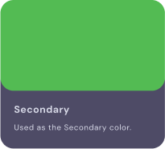

Understanding the GrowFix
For understanding GrowFix and its vision & mission, it’s really important to know the journey & methodology of product creation.
For me, getting clarification & understanding about the product was going through news, product videos, and podcasts.
- I read news/blogs to understand the vision/mission, knowledge about the founders/investors, and user's needs for GrowFix.
- For understanding the product, how it works? and how the product is solving the problem of investment for the people, I watched GrowFix videos multiple times to get a deeper understanding of the product without missing a point.
- Podcast really helped me to understand the founder's journey and the reason behind creating such low risk and higher return investment products as compare to FDs (Low Risk & Low Returns) and Mutual Funds (High Risk but High Returns).
- A literature review from the internet helped me to get understanding the terms like Liquidity, Loans, FDs, Mutual Funds, Retail Investors, Low-Risk Investment, NBFCs, Collaterals, Rating Agency, Selling & buying, Demat Account


https://www.livemint.com/brand-post/growfix-introduces-low-risk-products-by-democratizing-new-generation-assets-11603187421395.html
https://www.youtube.com/watch?v=-CXAdJxl52w
https://www.youtube.com/watch?v=nVPexO518kY
https://yourstory.com/2021/03/funding-alert-oncology-tech-startup-4basecare-rais?utm_pageloadtype=scroll
Design System
colors
Blue is the most popular preferred color among men. It suggests intelligence or serenity. Dark blue evokes luxury, and light blues are refreshing.
It is highly used among banks and financial institutions.
Green. Green is the color of money. If we use green in our website design we may be giving off a subconscious feeling of wealth.

.png)
.png)
Logo
A sketch of the logo helps to understand the business and their process so using colors and visualisation of the vision helps users to
understand the brand in one view.
Elements on Dashboard
.png) Sidebar navigation to help users to navigate through all over the product.
Sidebar navigation to help users to navigate through all over the product.
- Dashboard for viewing overall portfolio & assets
- Explore Assets to help users to view upcoming, current and old assets (User may think of buying new ones)
- KYC Details for verifying & updating documents.
- Learning Center to educate investors because it’s a new method of investment, upcoming events and plans. (As Ajinkya talked in Podcast)
- Learning Center to educate investors because it’s a new method of investment, upcoming events and plans. (As Ajinkya talked in Podcast)
- Settings for account, passwords, mobile number, email, interface appearance dark/light mode, language. email alerts, profile and etc.
 Top Navigation bar
Top Navigation bar
- Need help for get in touch with support team quickly.
- Notification for status of portfolio and updates.
- Profile dropdown for logout, language, privacy.
.png)

.png)
.png)